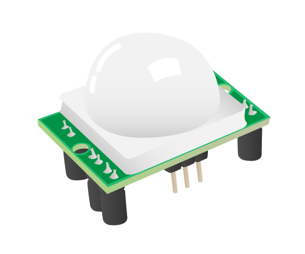
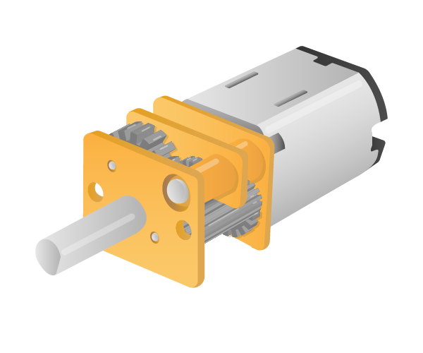
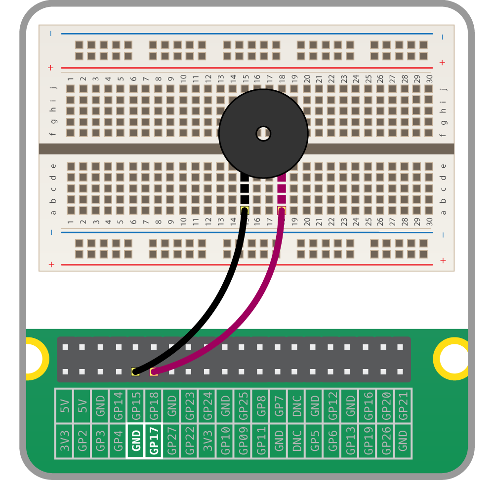
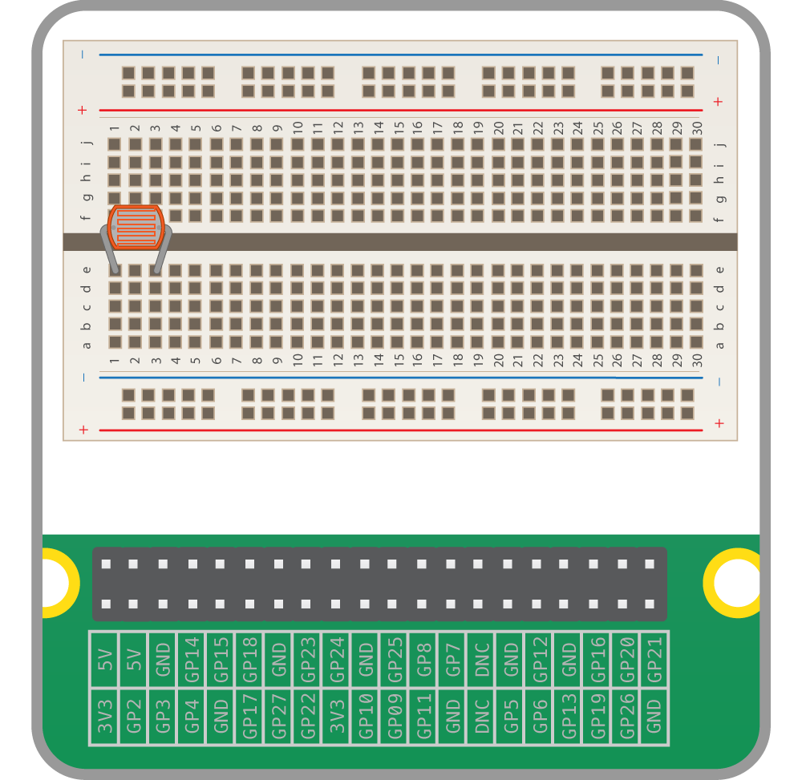
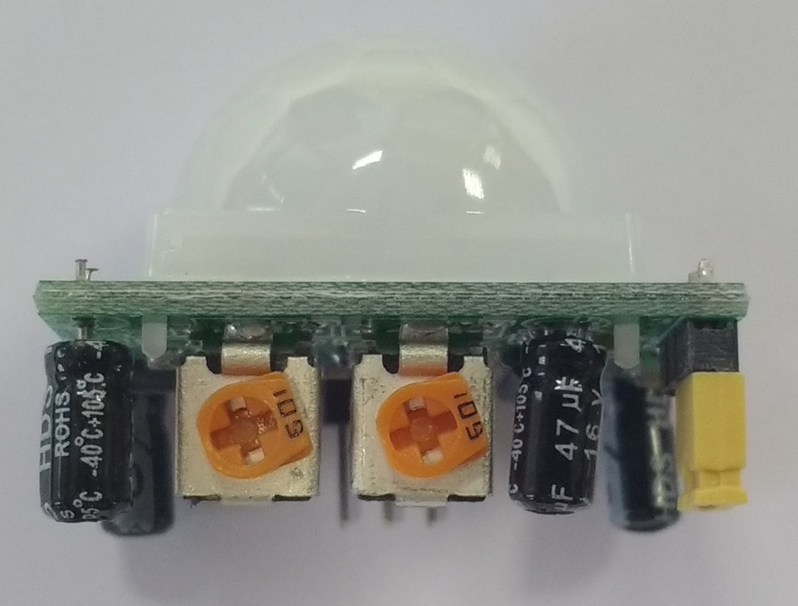
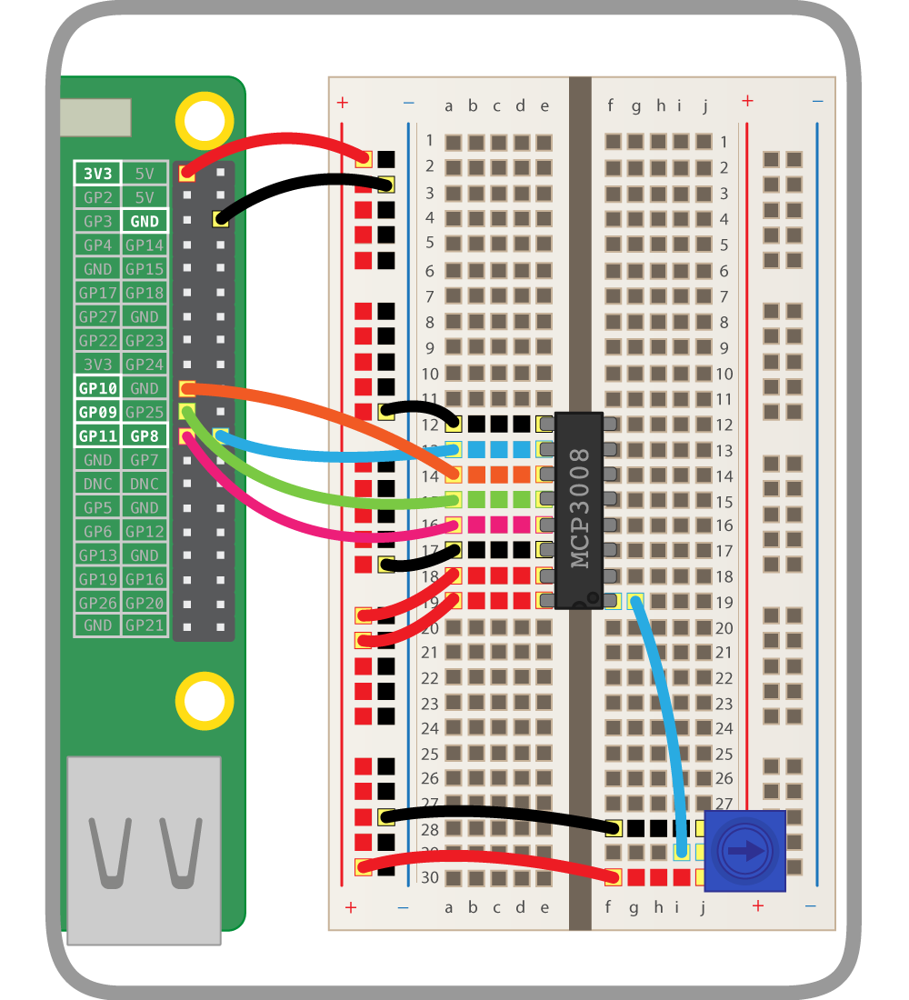

Introduction
What you will do
Learn how to use the GPIO pins on your Raspberry Pi to interface with electronic components, such as LEDs and PIRs.
What you will learn
This resource covers elements from the following strands of the Raspberry Pi Digital Making Curriculum{:target="_blank"}:
- Use basic programming constructs to create simple programs{:target="_blank"}
- Use basic digital, analogue, and electromechanical components{:target="_blank"}
What you will need
Hardware
As well as a Raspberry Pi with an SD card and the usual peripherals, you'll also need:
| 1x Solderless breadboard | Male-to-female jumper leads | Female-to-female jumper leads | Male-to-male jumper leads |
|---|---|---|---|
 |  |  |  |
| 1x Tactile button | 3x LEDs | Ultrasonic distance sensor | Passive infrared motion sensor |
|---|---|---|---|
 |  |  |  |
| Light Dependent Resistor | 2x 5V Micro Metal Gearmotor | 3x 330Ω Resistor | 470Ω Resistor |
|---|---|---|---|
 |  |  |  |
| 1x 1μF Capacitor | Buzzer | Motor Controller | Battery Pack |
|---|---|---|---|
 |  |  |  |
Software
There are no additional software requirements for this resource beyond what is pre-installed in the current Raspbian image. To make sure your SD card is up-to-date, see the updating Raspbian guide{:target="_blank"}.
GPIO pins
One powerful feature of the Raspberry Pi is the row of GPIO pins along the top edge of the board. GPIO stands for General-Purpose Input/Output. These pins are a physical interface between the Raspberry Pi and the outside world. At the simplest level, you can think of them as switches that you can turn on or off (input) or that the Pi can turn on or off (output).
The GPIO pins allow the Raspberry Pi to control and monitor the outside world by being connected to electronic circuits. The Pi is able to control LEDs, turning them on or off, run motors, and many other things. It's also able to detect whether a switch has been pressed, the temperature, and light. We refer to this as physical computing.
There are 40 pins on the Raspberry Pi (26 pins on early models), and they provide various different functions.
If you have a RasPiO pin label, it can help to identify what each pin is used for. Make sure your pin label is placed with the keyring hole facing the USB ports, pointed outwards.

If you don't have a pin label, then this guide can help you to identify the pin numbers:

You'll see pins labelled as 3V3, 5V, GND and GP2, GP3, etc:
| 3V3 | 3.3 volts | Anything connected to these pins will always get 3.3V of power |
| 5V | 5 volts | Anything connected to these pins will always get 5V of power |
| GND | ground | Zero volts, used to complete a circuit |
| GP2 | GPIO pin 2 | These pins are for general-purpose use and can be configured as input or output pins |
| ID_SC/ID_SD/DNC | Special purpose pins | |
WARNING: If you follow the instructions, then playing about with the GPIO pins is safe and fun. Randomly plugging wires and power sources into your Pi, however, may destroy it, especially if using the 5V pins. Bad things can also happen if you try to connect things to your Pi that use a lot of power; LEDs are fine, motors are not. If you're worried about this, then you might want to consider using an add-on board such as the Explorer HAT until you're confident enough to use the GPIO directly.
Lighting an LED
LEDs are delicate little things. If you put too much current through them they will pop (sometimes quite spectacularly). To limit the current going through the LED, you should always use a resistor in series with it.
Try connecting the long leg of an LED to the Pi's 3V3 and the short leg to a GND pin. The resistor can be anything over about 50Ω.

The LED should light up. It will always be on, because it's connected to a 3V3 pin, which is itself always on.
Now try moving it from 3V3 to GPIO pin 17:

The LED should now turn off, but now it's on a GPIO pin, and can therefore be controlled by code.
Switching an LED on and off
GPIO Zero is a new Python library which provides a simple interface to everyday GPIO components. It comes installed by default in Raspbian.
- Open IDLE.
[[[rpi-gui-idle-opening]]]
-
You can switch an LED on and off by typing commands directly into the Python interpreter window (also known as the Python shell). Let's do this by first importing the GPIO Zero library. You also need to tell the Pi which GPIO pin you are using - in this case pin 17. Next to the chevrons
>>>, type:from gpiozero import LED led = LED(17)Press Enter on the keyboard.
-
To make the LED switch on, type the following and press Enter:
led.on() -
To make it switch off you can type:
led.off() -
Your LED should switch on and then off again. But that's not all you can do.
Flashing an LED
With the help of the time library and a little loop, you can make the LED flash.
-
Create a new file by clicking File > New file.
-
Save the new file by clicking File > Save. Save the file as
gpio_led.py. -
Enter the following code to get started:
from gpiozero import LED from time import sleep led = LED(17) while True: led.on() sleep(1) led.off() sleep(1) -
Save with Ctrl + S and run the code with F5.
-
The LED should be flashing on and off. To exit the program press Ctrl + C on your keyboard.
Using buttons to get input
Now you're able to control an output component (an LED), let's connect and control an input component: a button.
-
Connect a button to another GND pin and GPIO pin 2, like this:

-
Create a new file by clicking File > New file.
-
Save the new file by clicking File > Save. Save the file as
gpio_button.py. -
This time you'll need the
Buttonclass, and to tell it that the button is on pin 2. Write the following code in your new file:from gpiozero import Button button = Button(2) -
Now you can get your program to do something when the button is pushed. Add these lines:
button.wait_for_press() print('You pushed me') -
Save with Ctrl + S and run the code with F5.
-
Press the button and your text will appear.
Manually controlling the LED
You can now combine your two programs written so far to control the LED using the button.
-
Create a new file by clicking File > New file.
-
Save the new file by clicking File > Save. Save the file as
gpio_control.py. -
Now write the following code:
from gpiozero import LED, Button from time import sleep led = LED(17) button = Button(2) button.wait_for_press() led.on() sleep(3) led.off() -
Save and run your program. When you push the button the LED should come on for three seconds.
Making a switch
With a switch, a single press and release on the button would turn the LED on, and another press and release would turn it off again.
-
Modify your code so that it looks like this:
from gpiozero import LED, Button from time import sleep led = LED(17) button = Button(2) while True: button.wait_for_press() led.toggle() sleep(0.5)led.toggle()switches the state of the LED from on to off, or off to on. Since this happens in a loop the LED will turn on and off each time the button is pressed. -
It would be great if you could make the LED switch on only when the button is being held down. With GPIO Zero, that's easy. There are two methods of the
Buttonclass calledwhen_pressedandwhen_released. These don't block the flow of the program, so if they are placed in a loop, the program will continue to cycle indefinitely. -
Modify your code to look like this:
from gpiozero import LED, Button from signal import pause led = LED(17) button = Button(2) button.when_pressed = led.on button.when_released = led.off pause() -
Save and run the program. Now when the button is pressed, the LED will light up. It will turn off again when the button is released.
Using a buzzer
There are two main types of buzzer: active and passive.
A passive buzzer emits a tone when a voltage is applied across it. It also requires a specific signal to generate a variety of tones. The active buzzers are a lot simpler to use, so these are covered here.
Connecting a buzzer
An active buzzer can be connected just like an LED, but as they are a little more robust, you won't be needing a resistor to protect them.
Set up the circuit as shown below:

-
Add
Buzzerto thefrom gpiozero import...line:from gpiozero import Buzzer from time import sleep -
Add a line below your creation of
buttonandlightsto add aBuzzerobject:buzzer = Buzzer(17) -
In GPIO Zero, a
Buzzerworks exactly like anLED, so try adding abuzzer.on()andbuzzer.off()into your loop:while True: buzzer.on() sleep(1) buzzer.off() sleep(1) -
A
Buzzerhas abeep()method which works like anLED'sblink. Try it out:while True: buzzer.beep()
Making traffic lights
For this worksheet you'll need a breadboard, three LEDs, a button, a buzzer, and the necessary jumper cables and resistors. You can purchase these individually, or get everything you need in the CamJam EduKit.
Wiring
To get started, you'll need to place all the components on the breadboard and connect them to the appropriate GPIO pins on the Raspberry Pi.
-
First, you need to understand how each component is connected:
- A push button requires 1 ground pin and 1 GPIO pin
- An LED requires 1 ground pin and 1 GPIO pin, with a current limiting resistor
- A buzzer requires 1 ground pin and 1 GPIO pin
Each component requires its own individual GPIO pin, but components can share a ground pin. We will use the breadboard to enable this.
-
Place the components on the breadboard and connect them to the Raspberry Pi GPIO pins, according to the following diagram:

Note that the row along the long side of the breadboard is connected to a ground pin on the Raspberry Pi, so all the components in that row (which is used as a ground rail) are hence connected to ground.
-
Observe the following table, showing which GPIO pin each component is connected to:
| Component | GPIO pin |
|---|---|
| Button | 21 |
| Red LED | 25 |
| Amber LED | 8 |
| Green LED | 7 |
| Buzzer | 15 |
Dive into Python
Open the Python application IDLE and get started by testing out the button.
-
Open Python 3 from the main menu:

-
Create a new file by clicking File > New File. This will open up a second window.
-
Save the new file straight away by clicking File > Save; name the file
trafficlights.pyand save it in your home folder. -
Enter the following code:
from gpiozero import Button button = Button(21) while True: print(button.is_pressed)In GPIO Zero, you create an object for each component used. Each component interface must be imported from the
gpiozeromodule, and an instance created on the GPIO pin number to which it is connected. -
Save and run the code by pressing
Ctrl + SandF5. -
This will bring the original Python window into focus and will be constantly printing
False. When you press the button this will switch toTrue, and when you let go it will return toFalse.button.is_pressedis a property of thebuttonobject, which provides the state of the button (pressed or not) at any given time. -
Now return to the code window and modify your
whileloop to show the following:while True: if button.is_pressed: print("Hello") else: print("Goodbye") -
Run the code again and you'll see "Hello" printed when the button is pressed, and "Goodbye" when the button is not pressed.
-
Modify the loop again:
while True: button.wait_for_press() print("Pressed") button.wait_for_release() print("Released") -
When you run the code this time, nothing will happen until you press the button, when you'll see "Pressed", then when you let go you'll see "Released". This will occur each time the button is pressed, but rather than continuously printing one or the other, it only does it once per press.
Add an LED
Now you'll add an LED into the code and use GPIO Zero to allow the button to determine when the LED is lit.
-
In your code, add to the
from gpiozero import...line at the top to also bring inLED:from gpiozero import Button, LED -
Add a line below
button = Button(21)to create an instance of anLEDobject:led = LED(25) -
Now modify your
whileloop to turn the LED on when the button is pressed:while True: button.wait_for_press() led.on() button.wait_for_release() led.off() -
Run your code and the LED will come on when you press the button. Hold the button down to keep the LED lit.
-
Now swap the
onandofflines to reverse the logic:while True: led.on() button.wait_for_press() led.off() button.wait_for_release() -
Run the code and you'll see the LED stays on until the button is pressed.
-
Now replace
led.on()withled.blink():while True: led.blink() button.wait_for_press() led.off() button.wait_for_release() -
Run the code and you'll see the LED blink on and off until the button is pressed, at which point it will turn off completely. When the button is released, it will start blinking again.
-
Try adding some parameters to
blinkto make it blink faster or slower:led.blink(2, 2)- 2 seconds on, 2 seconds offled.blink(0.5, 0.5)- half a second on, half a second offled.blink(0.1, 0.2)- one tenth of a second on, one fifth of a second off
blink's first two (optional) parameters areon_timeandoff_time': they both default to 1 second.
Traffic lights
You have three LEDs: red, amber, and green. Perfect for traffic lights! There's even a built-in interface for traffic lights in GPIO Zero.
-
Amend the
from gpiozero import...line to replaceLEDwithTrafficLights:from gpiozero import Button, TrafficLights -
Replace your
led = LED(25)line with the following:lights = TrafficLights(25, 8, 7)The
TrafficLightsinterface takes three GPIO pin numbers, one for each pin: red, amber, and green (in that order). -
Now amend your
whileloop to control theTrafficLightsobject:while True: button.wait_for_press() lights.on() button.wait_for_release() lights.off()The
TrafficLightsinterface is very similar to that of an individual LED: you can useon,off, andblink, all of which control all three lights at once. -
Try the
blinkexample:while True: lights.blink() button.wait_for_press() lights.off() button.wait_for_release()
Add a buzzer
Now you'll add your buzzer to make some noise.
-
Add
Buzzerto thefrom gpiozero import...line:from gpiozero import Button, TrafficLights, Buzzer -
Add a line below your creation of
buttonandlightsto add aBuzzerobject:buzzer = Buzzer(15) -
Buzzerworks exactly likeLED, so try adding abuzzer.on()andbuzzer.off()into your loop:while True: lights.on() buzzer.off() button.wait_for_press() lights.off() buzzer.on() button.wait_for_release() -
Buzzerhas abeep()method which works likeLED'sblink. Try it out:while True: lights.blink() buzzer.beep() button.wait_for_press() lights.off() buzzer.off() button.wait_for_release()
Traffic lights sequence
As well as controlling the whole set of lights together, you can also control each LED individually. With traffic light LEDs, a button and a buzzer, you can create your own traffic lights sequence, complete with pedestrian crossing!
-
At the top of your file, below
from gpiozero import..., add a line to import thesleepfunction:from time import sleep -
Modify your loop to perform an automated sequence of LEDs being lit:
while True: lights.green.on() sleep(1) lights.amber.on() sleep(1) lights.red.on() sleep(1) lights.off() -
Add a
wait_for_pressso that pressing the button initiates the sequence:while True: button.wait_for_press() lights.green.on() sleep(1) lights.amber.on() sleep(1) lights.red.on() sleep(1) lights.off()Try some more sequences of your own.
-
Now try creating the full traffic lights sequence:
- Green on
- Amber on
- Red on
- Red and amber on
- Green on
Be sure to turn the correct lights on and off at the right time, and make sure you use
sleepto time the sequence perfectly. -
Try adding the button for a pedestrian crossing. The button should move the lights to red (not immediately), and give the pedestrians time to cross before moving back to green until the button is pressed again.
-
Now try adding a buzzer to beep quickly to indicate that it is safe to cross, for the benefit of visually impaired pedestrians.
Using a light-dependent resistor
Analogue inputs
In the world of electrical engineering, there are two type of input and output (I/O): analogue and digital. Digital I/O is fairly easy to understand; it's either on or off, 1 or 0.
When talking about voltages and the Raspberry Pi, any input that is approximately below 1.8V is considered off and anything above 1.8V is considered on. For output, 0V is off and 3.3V is on.
Analogue I/O is a little trickier. With an analogue input, we can have a range of voltages from 0V up to 3.3V, and the Raspberry Pi is unable to detect exactly what that voltage is.

How, then, can we use a Raspberry Pi to determine the value of an analogue input, if it can only tell when the voltage to a GPIO pin goes above 1.8V?
Using a capacitor for analogue inputs
Capacitors are electrical components that store charge.
When current is fed into a capacitor, it will begin to store charge. The voltage across the capacitor will start off low, and increase as the charge builds up.
By putting a resistor in series with the capacitor, you can slow the speed at which it charges. With a high resistance, the capacitor will charge slowly, whereas a low resistance will let it charge quickly.
If you time how long it takes the capacitor's voltage to get over 1.8V (or be on), you can work out the resistance of the component in series with it.
Light-dependent resistors
An LDR (sometimes called a photocell) is a special type of resistor.
When light hits the LDR, its resistance is very low, but when it's in the dark its resistance is very high.
By placing a capacitor in series with an LDR, the capacitor will charge at different speeds depending on whether it's light or dark.
Creating a light-sensing circuit
- Place an LDR into your breadboard, as shown below:

- Now place a capacitor in series with the LDR. As the capacitor is a polar component, you must make sure the long leg is on the same track as the LDR leg.

- Finally, add jumper leads to connect the two components to your Raspberry Pi.

Coding a light sensor
Luckily, most of the complicated code you would have to write to detect the light levels received by the LDR has been abstracted away by the gpiozero library. This library will handle the timing of the capacitor's charging and discharging for you.
Use the following code to set up the light sensor:
from gpiozero import LightSensor, Buzzer
ldr = LightSensor(4) # alter if using a different pin
while True:
print(ldr.value)
Run this code, then cover the LDR with your hand and watch the value change. Try shining a strong light onto the LDR.
Using a PIR sensor
Humans and other animals emit radiation all the time. This is nothing to be concerned about, though, as the type of radiation we emit is infrared radiation (IR), which is pretty harmless at the levels at which it is emitted by humans. In fact, all objects at temperatures above absolute zero (-273.15C) emit infrared radiation.
A PIR sensor detects changes in the amount of infrared radiation it receives. When there is a significant change in the amount of infrared radiation it detects, then a pulse is triggered. This means that a PIR sensor can detect when a human (or any animal) moves in front of it.

Wiring a PIR sensor
The pulse emitted when a PIR detects motion needs to be amplified, and so it needs to be powered. There are three pins on the PIR: they should be labelled Vcc, Gnd, and Out. These labels are sometimes concealed beneath the Fresnel lens (the white cap), which you can temporarily remove to see the pin labels.

- As shown above, the Vcc pin needs to be attached to a 5V pin on the Raspberry Pi.
- The Gnd pin on the PIR sensor can be attached to any ground pin on the Raspberry Pi.
- Lastly, the Out pin needs to be connected to any of the GPIO pins.
Tuning a PIR
Most PIR sensors have two potentiometers on them. These can control the sensitivity of the sensors, and also the period of time for which the PIR will signal when motion is detected.

In the image above, the potentiometer on the right controls the sensitivity, and the potentiometer on the left controls the timeout. Here, both are turned fully anti-clockwise, meaning that the sensitivity and timeout are at their lowest.
When the timeout is turned fully anti-clockwise, the PIR will output a signal for about 2.5 seconds, whenever motion is detected. If the potentiometer is turned fully clockwise, the output signal will last for around 250 seconds. When tuning the sensitivity, it is best to have the timeout set as low as possible.
Detecting motion
You can detect motion with the PIR using the code below:
from gpiozero import MotionSensor
pir = MotionSensor(4)
while True:
pir.wait_for_motion()
print("You moved")
pir.wait_for_no_motion()
Using an ultrasonic distance sensor
In air, sound travels at a speed of 343 metres per second. An ultrasonic distance sensor sends out pulses of ultrasound which are inaudible to humans, and detects the echo that is sent back when the sound bounces off a nearby object. It then uses the speed of sound to calculate the distance from the object.
Wiring
The circuit connects to two GPIO pins (one for echo, one for trigger), the ground pin, and a 5V pin. You'll need to use a pair of resistors (330Ω and 470Ω) as a potential divider:

Code
To use the ultrasonic distance sensor in Python, you need to know which GPIO pins the echo and trigger are connected to.
-
Open Python 3.
-
In the shell, enter the following line to import
DistanceSensorfrom the GPIO Zero library:from gpiozero import DistanceSensorAfter each line, press Enter and the command will be executed immediately.
-
Create an instance of
DistanceSensorusing your echo and trigger pins:ultrasonic = DistanceSensor(echo=17, trigger=4) -
See what distance it shows:
ultrasonic.distanceYou should see a number: this is the distance to the nearest object, in metres.
-
Try using a loop to print the distance continuously, while waving your hand in front of the sensor to alter the distance reading:
while True: print(ultrasonic.distance)The value should get smaller the closer your hand is to the sensor. Press Ctrl + C to exit the loop.
Ranges
As well as being able to see the distance value, you can also get the sensor to do things when the object is in or out of a certain range.
-
Use a loop to print different messages when the sensor is in range or out of range:
while True: ultrasonic.wait_for_in_range() print("In range") ultrasonic.wait_for_out_of_range() print("Out of range")Now wave your hand in front of the sensor; it should switch between showing the message "In range" and "Out of range" as your hand gets closer and further away from the sensor. See if you can work out the point at which it changes.
-
The default range threshold is 0.3m. This can be configured when the sensor is initiated:
ultrasonic = DistanceSensor(echo=17, trigger=4, threshold_distance=0.5)Alternatively, this can be changed after the sensor is created, by setting the
threshold_distanceproperty:ultrasonic.threshold_distance = 0.5 -
Try the previous loop again and observe the new range threshold.
-
The
wait_forfunctions are blocking, which means they halt the program until they are triggered. Another way of doing something when the sensor goes in and out of range is to usewhenproperties, which can be used to trigger actions in the background while other things are happening in the code.First, you need to create a function for what you want to happen when the sensor is in range:
def hello(): print("Hello")Then set
ultrasonic.when_in_rangeto the name of this function:ultrasonic.when_in_range = hello -
Add another function for when the sensor goes out of range:
def bye(): print("Bye") ultrasonic.when_out_of_range = byeNow these triggers are set up, you'll see "hello" printed when your hand is in range, and "bye" when it's out of range.
-
You may have noticed that the sensor distance stopped at 1 metre. This is the default maximum and can also be configured on setup:
ultrasonic = DistanceSensor(echo=17, trigger=4, max_distance=2)Or after setup:
ultrasonic.max_distance = 2 -
Try different values of
max_distanceandthreshold_distance.
Analogue inputs
The Raspberry Pi's GPIO pins are digital pins, so you can only set outputs to high or low, or read inputs as high or low. However, using an ADC chip (Analogue-to-Digital converter), you can read the value of analogue input devices such as potentiometers.
SPI
The analogue values are communicated to the Pi using the SPI protocol. While this will work in GPIO Zero out of the box, you may get better results if you enable full SPI support.
-
Open a terminal window and install the
spidevpackage:sudo apt-get install python3-spidev python-spidev -
Open the Raspberry Pi Configuration dialogue from the main menu and enable SPI in the Interfaces tab:

-
Click OK and reboot the Pi.
Wiring the ADC (MCP3008)
The MCP3008 is an ADC providing eight input channels. The eight connectors on one side are connected to the Pi's GPIO pins, and the other eight are available to connect analogue input devices to read their values.
Place the MCP3008 chip on a breadboard and carefully wire it up as shown in the following diagram. You should see a small notch, or dot, in one end of the chip. In the diagram, this end of the chip is alligned with column 19 on the breadboard.

Alternatively, you could use the Analog Zero board, which provides the MCP3008 chip on a handy add-on board to save you from the complicated wiring.
Add a potentiometer
Now that the ADC is connected to the Pi, you can wire devices up to the input channels. A potentiometer is a good example of an analogue input device: it's simply a variable resistor, and the Pi reads the voltage (from 0V to 3.3V).

A potentiometer's pins are ground, data, and 3V3. This means you connect it to ground and a supply of 3V3, and read the actual voltage from the middle pin.
-
Place a potentiometer on the breadboard and wire one side to the ground rail, the other to the 3V3 rail, and the middle pin to the first input channel as shown:

Code
Now your potentiometer is connected and its value can be read from Python!
-
Open Python 3 from the main menu.
-
In the shell, start by importing the
MCP3008class from the GPIO Zero library:from gpiozero import MCP3008 -
Create an object representing your analogue device:
pot = MCP3008(0)Note the
0represents the ADC's channel 0. There are 8 channels (0 to 7), and you're using the first one. -
Try to read its value:
print(pot.value)You should see a number between 0 and 1. This represents how far the dial is turned.
-
Now read the value in a loop:
while True: print(pot.value)Try twisting the dial around to see the value change.
PWMLED
Now you've tested you can read values from the potentiometer, you should connect it to another GPIO device.
-
Add an LED to your breadboard and wire it to the Pi, connecting it to GPIO pin 21:

-
In your Python code, start by importing the
PWMLEDclass:from gpiozero import PWMLEDThe
PWMLEDclass lets you control the brightness of an LED using PWM, or pulse-width modulation. -
Create a
PWMLEDobject on pin 21:led = PWMLED(21) -
Test you can control the LED manually:
led.on() # the led should be lit led.off() # the led should go off led.value = 0.5 # the led should be lit at half brightness -
Now connect the LED to the potentiometer:
led.source = pot.values -
Turn the dial to change the LED brightness!
Source and values
GPIO Zero has a powerful feature: source and values. Every device has a value property (the current value) and a values property (a stream of the device's values at all times). Every output device has a source property which can be used to set what the device's value should be.
pot.valuegives the potentiometer's current value (it's read only, as it's an input device)led.valueis the LED's current value (it's read/write: you can see what it is, and you can change it)pot.valuesis a generator constantly yielding the potentiometer's current valueled.sourceis a way of setting where the LED gets its values from
Rather than continuously setting the value of the LED to the value of the potentiometer in a loop, you can just pair the two devices. Therefore the line led.source = pot.values is equivalent to the following loop:
while True:
led.value = pot.value
Multiple potentiometers
-
Add a second potentiometer to your breadboard and connect it to the ADC's channel 1:

-
Now create a second
MCP3008object on channel 1:pot2 = MCP3008(1) -
Make the LED blink:
led.blink()The LED will blink continuously, one second on and one second off.
-
Change the
on_timeandoff_timeparameters to make it blink faster or slower:led.blink(on_time=2, off_time=2) led.blink(on_time=0.5, off_time=0.1) -
Now use a loop to change the blink times according to the potentiometer values:
while True: print(pot.value, pot2.value) led.blink(on_time=pot.value, off_time=pot2.value, n=1, background=False)Note you have to make it blink once in the foreground, so that each iteration gets time to finish before it updates the blink times.
-
Rotate the dials to make it blink at different speeds!
-
Also try changing
blinktopulseand changeon_timeandoff_timetofade_in_timeandfade_out_timeso that it fades in and out at different speeds, rather than just blinking on and off:while True: print(pot.value, pot2.value) led.pulse(fade_in_time=pot.value, fade_out_time=pot2.value, n=1, background=False) -
Rotate the dials to change the effect.
Using motors
Motors are great for physical computing: they allow you to turn a wheel forwards and backwards, or make something spin around.
A motor can't be controlled directly from the Raspberry Pi's GPIO pins, because it needs a variable supply of 5 volts. This means you need to power it separately. However, motor controller add-on boards can be used to provide this functionality.
In this guide, you'll be controlling two motors from your Raspberry Pi using Python on the desktop. First, it's best just to learn how to control the motor. Then, once you have it working, you could easily use your code to drive a Raspberry Pi-powered robot by detaching the monitor, mouse, and keyboard and building a robot around a chassis.
H bridge
A motor can be driven forwards or backwards depending on which way around current flows through it. However, it would be awkward to have to rewire a motor, every time you want to change the direction it spins. To overcome this issue, motor controller boards include an H bridge. An H bridge uses 4 transistors to allow digital control of which way current flows through the motor. Most H bridges also contain flyback diodes. A flyback diode prevents the voltage spike that is generated by the motor when it is no longer powered (but still spinning) from damaging delicate electronics.

Image credit: Wikipedia, CC BY-SA
Wiring
You'll need to wire up two motors and your battery pack using the motor controller.
-
With your Pi switched off, mount your motor controller board on the GPIO pins:

-
Connect a battery pack to the power ports of the motor controller, connecting the positive (red) battery wire to the positive (+) power terminal on the motor controller, and the negative (black) battery wire to the negative (-) power terminal on the motor controller, and connect two motors:

-
You'll need to know which GPIO pins your motor controller uses. Refer to the board's documentation. This will usually be described as Motor A and Motor B, or MA1, MA2, MB1, and MB2. Make a note of these pin numbers. If you're not sure which is which, you can investigate this next.
Output devices
First, you should learn to control motors by controlling the pins individually.
-
Boot the Pi and open Python 3.
-
In the shell, enter the following line to import
OutputDevicefrom the GPIO Zero library:from gpiozero import OutputDeviceAfter each line, press Enter and the command will be executed immediately.
-
Now create an instance of an
OutputDeviceon each of the pins for one motor:a = OutputDevice(4) b = OutputDevice(14) -
Now you should be able to make the motor spin by turning one of the pins on:
a.on()The motor should now be spinning! If not, check you are addressing the right pin numbers. The two pins should be connected to the same motor. Also, check your wiring and your batteries.
-
Now try turning that pin off, and turning the other pin on:
a.off() b.on()The motor should now be spinning in the opposite direction.
-
To stop the motor, just make sure both pins are off:
a.off() b.off() -
Now try the same with the second motor:
c = OutputDevice(17) d = OutputDevice(27) c.on() -
And backwards:
c.off() d.on() -
And stop:
c.off() d.off() -
Try controlling one of the motors in a loop:
from time import sleep for i in range(5): b.off() a.on() sleep(5) a.off() b.on() sleep(5) b.off()The motor should now spin forwards for 5 seconds then backwards for 5 seconds, repeat this 5 times, and then stop.
PWM
So far, you have used simple on/off commands to control your motors. PWM (pulse-width modulation) allows you to control the speed. The on() function sets the motor to go at full speed, but you can control this to make the motor go at a fraction of this speed.
-
Since you're going to reuse the same pins in a different way, you'll have to close the connections to the pins. The easiest way to do that is to restart the Python shell by clicking Shell > Restart shell.
-
Import the
PWMOutputDeviceclass:from gpiozero import PWMOutputDevice -
Create new connections to each of your pins as before, but using
PWMOutputDevice:a = PWMOutputDevice(4) b = PWMOutputDevice(14) c = PWMOutputDevice(17) d = PWMOutputDevice(27) -
You can still use
a.on(),a.off()and so on, but you can also set the device's value to a number between0and1. Try half:a.value = 0.5The motor should now be spinning at half speed.
-
To turn the motor in the opposite direction, turn
aoff (or set its value to0) and setb's value to0.5:a.value = 0 b.value = 0.5The motor should now be spinning backwards at half speed.
-
Try controlling both motors at different speeds to compare:
a.value = 0.5 b.value = 0 c.value = 1 d.value = 0 -
Try increasing the speed in a loop:
b.off() d.off() for i in range(1, 11): speed = i / 10 print(speed) a.value = speed c.value = speed sleep(0.5)The motors should now speed up from 0 (stopped) to 0.1, 0.2 and up to 1.
Be aware, though, that the motor may not move until it gets above a certain speed, as there may not be enough power to engage it.
Motor class
Now you've learned how setting pins high and low can control a motor, you should proceed to using the built-in Motor class; this has all the functionality you just learned about, provided in a simple way, including PWM for speed.
-
Restart the shell again (Ctrl + F6).
-
Import the
Motorclass:from gpiozero import Motor -
Now create a
Motorinstance using the pin numbers for each motor:motor1 = Motor(4, 14) motor2 = Motor(17, 27)Note: to make it easier to see which pin is which, you can use
Motor(forward=4, backward=14)for future reference. -
Now drive one of the motors forward using the following code:
motor1.forward() -
And the other backwards:
motor2.backward() -
Or try half speed:
motor1.forward(0.5) motor2.backward(0.5) -
The
Motorclass also allows you to reverse the motor's direction. Try using this loop:motor1.forward() motor2.backward() while True: sleep(5) motor1.reverse() motor2.reverse()This will make the motors spin in opposite directions, then switch every five seconds. Press Ctrl + C to exit the loop.
-
Now stop the motors:
motor1.stop() motor2.stop()
Robot class
If you had a robot with two wheels you would want to control the two motors together, rather than separately, just like you did for the two pins of each motor. Luckily, there's also a Robot class in GPIO Zero.
-
Restart the shell again (Ctrl + F6).
-
Import the
Robotclass:from gpiozero import Robot -
Now create a
Robotinstance using the pin numbers for each motor:robot = Robot((4, 14), (17, 27))Note: to make it easier to see which pin is which, you can use
Robot(left=(4, 14), right=(17, 27))for future reference. -
Now drive one of the motors forward using the following code:
robot.forward()Both motors should now be driving forwards.
-
And backwards:
robot.backward()Both motors should now be driving backwards.
-
Try reverse a few times:
robot.reverse() robot.reverse() robot.reverse() -
Or try half speed:
robot.forward(0.5) -
That's not all! What would happen if the left wheel went forwards and the right wheel went backwards? The robot would turn right. Try it:
robot.right() -
Then try this:
robot.left() -
Now stop the robot:
robot.stop()